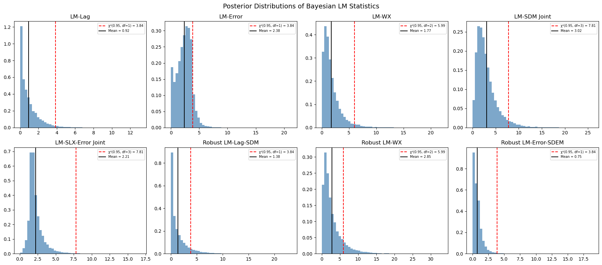

Bayesian LM Tests for SDM/SDEM Specification¶
This notebook demonstrates the 6 new Bayesian LM test functions in bayespecon for testing spatial model specification in the SDM (Spatial Durbin Model) and SDEM (Spatial Durbin Error Model) directions.
Background¶
Classical LM Tests (Koley & Bera, 2024)¶
The classical Lagrange Multiplier (LM) framework for spatial models tests:
Test |
H₀ |
Alternative |
df |
|---|---|---|---|
LM-Lag |
ρ = 0 |
SAR |
1 |
LM-Error |
λ = 0 |
SEM |
1 |
LM-WX |
γ = 0 |
SLX |
\(k_{wx}\) |
LM-SDM (joint) |
ρ = 0, γ = 0 |
SDM |
\(1 + k_{wx}\) |
LM-SLX-Error (joint) |
λ = 0, γ = 0 |
SDEM |
\(1 + k_{wx}\) |
Robust LM-Lag-SDM |
ρ = 0 (robust to γ) |
SDM |
1 |
Robust LM-WX |
γ = 0 (robust to ρ) |
SDM |
\(k_{wx}\) |
Robust LM-Error-SDEM |
λ = 0 (robust to γ) |
SDEM |
1 |
Bayesian Robust Chi-Squared Test (Dogan et al., 2021)¶
The Bayesian analogue replaces the classical score with the posterior mean of the outer product of scores and uses the Neyman orthogonal score for robust tests:
where the Neyman-adjusted score is:
This adjustment ensures the test is robust to local misspecification in the nuisance parameter φ, following Bera & Yoon (1993) and Dogan et al. (2021, Proposition 3).
import numpy as np
import arviz as az
import matplotlib.pyplot as plt
import libpysal
from bayespecon import (
SAR,
SLX,
OLS,
bayesian_lm_lag_test,
bayesian_lm_error_test,
bayesian_lm_wx_test,
bayesian_lm_sdm_joint_test,
bayesian_lm_slx_error_joint_test,
bayesian_robust_lm_lag_sdm_test,
bayesian_robust_lm_wx_test,
bayesian_robust_lm_error_sdem_test,
summarize_bayesian_lm_test,
)
# Optional: spreg for classical comparison
try:
from spreg import LMtests as SpregLMtests, OLS as SpregOLS
HAS_SPREG = True
except ImportError:
HAS_SPREG = False
print("spreg not available — classical comparison will be skipped")
print("All bayespecon imports OK")
All bayespecon imports OK
1. Generate Spatial Data¶
We create a simple spatial DGP with known parameters to validate the tests. Under the null hypothesis (no spatial effects), the Bayesian LM statistics should be small with high p-values.
from libpysal.graph import Graph
from libpysal.weights import Rook
import geopandas as gpd
import scipy.sparse as sp
# Generate data under H0: no spatial effects
np.random.seed(42)
# Load Columbus dataset for spatial weights
columbus_path = libpysal.examples.get_path("columbus.shp")
gdf = gpd.read_file(columbus_path)
# Create a Graph (modern libpysal API) for bayespecon models
# Row-standardize the graph so spatial models work correctly
g = Graph.build_contiguity(gdf, rook=True).transform("r")
n = g.n
# Also create legacy W for spreg comparison (if available)
w_spreg = Rook.from_shapefile(columbus_path)
w_spreg.transform = "r"
# Get sparse and dense W matrices
W_sparse = g.sparse.tocsr().astype(np.float64)
W_dense = np.array(W_sparse.todense())
# Design matrix
k = 3
X = np.column_stack([np.ones(n), np.random.normal(size=(n, k - 1))])
beta_true = np.array([1.0, 2.0, -1.5])
y = X @ beta_true + np.random.normal(scale=1.0, size=n)
print(f"n = {n}, k = {k}")
print(f"W shape: {W_sparse.shape}, nnz: {W_sparse.nnz}")
n = 49, k = 3
W shape: (49, 49), nnz: 200
/home/runner/micromamba/envs/test/lib/python3.14/site-packages/libpysal/io/iohandlers/pyShpIO.py:247: FutureWarning: Objects based on the `Geometry` class will deprecated and removed in a future version of libpysal.
shp = self.type(vertices)
/home/runner/micromamba/envs/test/lib/python3.14/site-packages/libpysal/cg/shapes.py:1408: FutureWarning: Objects based on the `Geometry` class will deprecated and removed in a future version of libpysal.
self._part_rings = [Ring(vertices)]
2. Fit Null Models¶
The Bayesian LM tests require posterior draws from the null model (the model under H₀). Different tests use different null models:
LM-WX test: SAR model (includes ρ but not γ)
LM-SDM joint test: OLS model (no spatial params)
LM-SLX-Error joint test: OLS model (no spatial params)
Robust LM-Lag-SDM: SLX model (includes γ but not ρ)
Robust LM-WX: SAR model (includes ρ but not γ)
Robust LM-Error-SDEM: SLX model (includes γ but not λ)
# Fit OLS model (null for joint tests)
ols_model = OLS(y=y, X=X, W=g)
ols_model.fit(draws=5000, tune=5000, chains=4, random_seed=42)
print("OLS model fitted")
# Fit SAR model (null for LM-WX and robust LM-WX)
sar_model = SAR(y=y, X=X, W=g)
sar_model.fit(draws=5000, tune=5000, chains=4, random_seed=42)
print("SAR model fitted")
# Fit SLX model (null for robust LM-Lag-SDM and robust LM-Error-SDEM)
slx_model = SLX(y=y, X=X, W=g)
slx_model.fit(draws=5000, tune=5000, chains=4, random_seed=42)
print("SLX model fitted")
Initializing NUTS using jitter+adapt_diag...
Multiprocess sampling (4 chains in 2 jobs)
NUTS: [beta, sigma]
Sampling 4 chains for 5_000 tune and 5_000 draw iterations (20_000 + 20_000 draws total) took 17 seconds.
Initializing NUTS using jitter+adapt_diag...
Multiprocess sampling (4 chains in 2 jobs)
NUTS: [rho, beta, sigma]
Sampling 4 chains for 5_000 tune and 5_000 draw iterations (20_000 + 20_000 draws total) took 18 seconds.
Initializing NUTS using jitter+adapt_diag...
Multiprocess sampling (4 chains in 2 jobs)
NUTS: [beta, sigma]
Sampling 4 chains for 5_000 tune and 5_000 draw iterations (20_000 + 20_000 draws total) took 18 seconds.
/home/runner/micromamba/envs/test/lib/python3.14/site-packages/rich/live.py:260: UserWarning: install "ipywidgets"
for Jupyter support
warnings.warn('install "ipywidgets" for Jupyter support')
OLS model fitted
SAR model fitted
SLX model fitted
/home/runner/micromamba/envs/test/lib/python3.14/site-packages/rich/live.py:260: UserWarning: install "ipywidgets"
for Jupyter support
warnings.warn('install "ipywidgets" for Jupyter support')
/home/runner/micromamba/envs/test/lib/python3.14/site-packages/rich/live.py:260: UserWarning: install "ipywidgets"
for Jupyter support
warnings.warn('install "ipywidgets" for Jupyter support')
3. Non-Robust Bayesian LM Tests¶
These tests assume the nuisance parameters are correctly specified (zero). They are the Bayesian analogues of the classical LM tests from Koley & Bera (2024).
# --- LM-Lag Test (from OLS posterior) ---
# H0: rho = 0 (no spatial lag)
result_lag = bayesian_lm_lag_test(ols_model)
print("=== Bayesian LM-Lag Test ===")
summarize_bayesian_lm_test(result_lag)
print(f" df = {result_lag.df}")
print()
# --- LM-Error Test (from OLS posterior) ---
# H0: lambda = 0 (no spatial error)
result_error = bayesian_lm_error_test(ols_model)
print("=== Bayesian LM-Error Test ===")
summarize_bayesian_lm_test(result_error)
print(f" df = {result_error.df}")
print()
# --- LM-WX Test (from SAR posterior) ---
# H0: gamma = 0 (no WX effects), assuming rho is correctly specified
result_wx = bayesian_lm_wx_test(sar_model)
print("=== Bayesian LM-WX Test ===")
summarize_bayesian_lm_test(result_wx)
print(f" df = {result_wx.df}")
print()
# --- LM-SDM Joint Test (from OLS posterior) ---
# H0: rho = 0 AND gamma = 0 (joint test for SDM)
result_sdm = bayesian_lm_sdm_joint_test(ols_model)
print("=== Bayesian LM-SDM Joint Test ===")
summarize_bayesian_lm_test(result_sdm)
print(f" df = {result_sdm.df}")
print()
# --- LM-SLX-Error Joint Test (from OLS posterior) ---
# H0: lambda = 0 AND gamma = 0 (joint test for SDEM)
result_slx_err = bayesian_lm_slx_error_joint_test(ols_model)
print("=== Bayesian LM-SLX-Error Joint Test ===")
summarize_bayesian_lm_test(result_slx_err)
print(f" df = {result_slx_err.df}")
=== Bayesian LM-Lag Test ===
Bayesian LM Test (bayesian_lm_lag):
Degrees of freedom: 1
Mean: 0.922
Median: 0.590
95% Credible Interval: [0.002, 3.691]
Bayesian p-value: 0.337
df = 1
=== Bayesian LM-Error Test ===
Bayesian LM Test (bayesian_lm_error):
Degrees of freedom: 1
Mean: 2.382
Median: 2.463
95% Credible Interval: [0.060, 4.776]
Bayesian p-value: 0.123
df = 1
=== Bayesian LM-WX Test ===
Bayesian LM Test (bayesian_lm_wx):
Degrees of freedom: 2
Mean: 1.772
Median: 1.296
95% Credible Interval: [0.105, 6.309]
Bayesian p-value: 0.412
df = 2
=== Bayesian LM-SDM Joint Test ===
Bayesian LM Test (bayesian_lm_sdm_joint):
Degrees of freedom: 3
Mean: 3.023
Median: 2.446
95% Credible Interval: [0.432, 9.033]
Bayesian p-value: 0.388
df = 3
=== Bayesian LM-SLX-Error Joint Test ===
Bayesian LM Test (bayesian_lm_slx_error_joint):
Degrees of freedom: 3
Mean: 2.209
Median: 1.917
95% Credible Interval: [0.874, 5.073]
Bayesian p-value: 0.530
df = 3
4. Robust Bayesian LM Tests (Neyman Orthogonal Score)¶
These tests use the Neyman orthogonal score adjustment from Dogan et al. (2021, Proposition 3) to ensure robustness against local misspecification in the nuisance parameter. This is the key innovation over the classical Bera-Yoon (1993) approach.
The adjustment removes the correlation between the test parameter score and the nuisance parameter score:
where \(J_{\cdot \cdot \cdot \sigma}\) denotes information matrix blocks partitioned on \(\sigma^2\).
# --- Robust LM-Lag-SDM Test (from SLX posterior) ---
# H0: rho = 0, robust to local misspecification in gamma
result_robust_lag = bayesian_robust_lm_lag_sdm_test(slx_model)
print("=== Bayesian Robust LM-Lag-SDM Test ===")
summarize_bayesian_lm_test(result_robust_lag)
print(f" df = {result_robust_lag.df}")
print()
# --- Robust LM-WX Test (from SAR posterior) ---
# H0: gamma = 0, robust to local misspecification in rho
result_robust_wx = bayesian_robust_lm_wx_test(sar_model)
print("=== Bayesian Robust LM-WX Test ===")
summarize_bayesian_lm_test(result_robust_wx)
print(f" df = {result_robust_wx.df}")
print()
# --- Robust LM-Error-SDEM Test (from SLX posterior) ---
# H0: lambda = 0, robust to local misspecification in gamma
result_robust_err = bayesian_robust_lm_error_sdem_test(slx_model)
print("=== Bayesian Robust LM-Error-SDEM Test ===")
summarize_bayesian_lm_test(result_robust_err)
print(f" df = {result_robust_err.df}")
=== Bayesian Robust LM-Lag-SDM Test ===
Bayesian LM Test (bayesian_robust_lm_lag_sdm):
Degrees of freedom: 1
Mean: 1.381
Median: 0.697
95% Credible Interval: [0.002, 6.449]
Bayesian p-value: 0.240
df = 1
=== Bayesian Robust LM-WX Test ===
Bayesian LM Test (bayesian_robust_lm_wx):
Degrees of freedom: 2
Mean: 2.854
Median: 1.914
95% Credible Interval: [0.205, 10.899]
Bayesian p-value: 0.240
df = 2
=== Bayesian Robust LM-Error-SDEM Test ===
Bayesian LM Test (bayesian_robust_lm_error_sdem):
Degrees of freedom: 1
Mean: 0.751
Median: 0.588
95% Credible Interval: [0.003, 2.653]
Bayesian p-value: 0.386
df = 1
5. Posterior Distribution of LM Statistics¶
A key advantage of the Bayesian approach is that we get a full posterior distribution of the LM statistic, not just a point estimate. This allows us to compute credible intervals and posterior probabilities.
from scipy import stats as sp_stats
fig, axes = plt.subplots(2, 4, figsize=(18, 8))
results = [
("LM-Lag", result_lag),
("LM-Error", result_error),
("LM-WX", result_wx),
("LM-SDM Joint", result_sdm),
("LM-SLX-Error Joint", result_slx_err),
("Robust LM-Lag-SDM", result_robust_lag),
("Robust LM-WX", result_robust_wx),
("Robust LM-Error-SDEM", result_robust_err),
]
for ax, (name, res) in zip(axes.flat, results):
ax.hist(res.lm_samples, bins=50, density=True, alpha=0.7, color="steelblue")
chi2_ref = sp_stats.chi2.ppf(0.95, res.df)
ax.axvline(chi2_ref, color="red", linestyle="--", label=f"χ²(0.95, df={res.df}) = {chi2_ref:.2f}")
ax.axvline(res.mean, color="black", linestyle="-", label=f"Mean = {res.mean:.2f}")
ax.set_title(name)
ax.legend(fontsize=7)
plt.suptitle("Posterior Distributions of Bayesian LM Statistics", fontsize=14)
plt.tight_layout()
plt.show()

6. Comparison with Classical spreg LM Tests¶
When spreg is available, we can compare the Bayesian LM statistics (posterior mean) with the classical point estimates. Under flat priors, the Bayesian and classical tests should converge.
if HAS_SPREG:
# Run classical spreg LM tests using spreg's OLS + LMtests
ols_spreg = SpregOLS(y, X)
lm_spreg = SpregLMtests(ols_spreg, w_spreg)
spreg_results = {
"LM-Lag": lm_spreg.lml,
"LM-Error": lm_spreg.lme,
"Robust LM-Lag": lm_spreg.rlml,
"Robust LM-Error": lm_spreg.rlme,
"LM-WX": lm_spreg.lmwx,
"Robust LM-WX": lm_spreg.rlmwx,
"LM-SDM Joint": lm_spreg.lmspdurbin,
"Robust LM-Lag-SDM": lm_spreg.rlmdurlag,
"LM-SLX-Error Joint": lm_spreg.lmslxerr,
}
print("Classical spreg LM tests:")
for name, (stat, pval) in spreg_results.items():
print(f" {name:<30} stat={stat:.4f} p={pval:.4f}")
# Bayesian vs Classical comparison table
bayes_tests = [
("LM-Lag", result_lag, "LM-Lag"),
("LM-Error", result_error, "LM-Error"),
("LM-WX", result_wx, "LM-WX"),
("LM-SDM Joint", result_sdm, "LM-SDM Joint"),
("LM-SLX-Error Joint", result_slx_err, "LM-SLX-Error Joint"),
("Robust LM-Lag-SDM", result_robust_lag, "Robust LM-Lag-SDM"),
("Robust LM-WX", result_robust_wx, "Robust LM-WX"),
("Robust LM-Error-SDEM", result_robust_err, None),
]
print("\nBayesian vs Classical comparison:")
print(f" {'Test':<30} {'Bayes Mean':>12} {'spreg stat':>12} {'Bayes p-val':>12} {'spreg p-val':>12}")
print(f" {'-'*78}")
for bname, res, sname in bayes_tests:
if sname and sname in spreg_results:
s_stat, s_pval = spreg_results[sname]
print(f" {bname:<30} {res.mean:>12.4f} {s_stat:>12.4f} {res.bayes_pvalue:>12.4f} {s_pval:>12.4f}")
else:
print(f" {bname:<30} {res.mean:>12.4f} {'N/A':>12} {res.bayes_pvalue:>12.4f} {'N/A':>12}")
else:
print("spreg not available — skipping classical comparison\n")
print("Summary of Bayesian LM tests:")
print(f" {'Test':<30} {'Mean':>10} {'Median':>10} {'95% CI':>20} {'p-value':>10} {'df':>5}")
print(f" {'-'*85}")
for name, res in results:
ci_lo, ci_hi = res.credible_interval
print(f" {name:<30} {res.mean:>10.3f} {res.median:>10.3f} [{ci_lo:>7.2f}, {ci_hi:>7.2f}] {res.bayes_pvalue:>10.3f} {res.df:>5}")
Classical spreg LM tests:
LM-Lag stat=0.8861 p=0.3465
LM-Error stat=1.3416 p=0.2467
Robust LM-Lag stat=0.0578 p=0.8100
Robust LM-Error stat=0.5134 p=0.4737
LM-WX stat=0.6161 p=0.7349
Robust LM-WX stat=1.0717 p=0.5852
LM-SDM Joint stat=1.9577 p=0.5812
Robust LM-Lag-SDM stat=1.3416 p=0.2467
LM-SLX-Error Joint stat=1.9577 p=0.5812
Bayesian vs Classical comparison:
Test Bayes Mean spreg stat Bayes p-val spreg p-val
------------------------------------------------------------------------------
LM-Lag 0.9216 0.8861 0.3370 0.3465
LM-Error 2.3821 1.3416 0.1227 0.2467
LM-WX 1.7716 0.6161 0.4124 0.7349
LM-SDM Joint 3.0233 1.9577 0.3880 0.5812
LM-SLX-Error Joint 2.2089 1.9577 0.5302 0.5812
Robust LM-Lag-SDM 1.3812 1.3416 0.2399 0.2467
Robust LM-WX 2.8535 1.0717 0.2401 0.5852
Robust LM-Error-SDEM 0.7507 N/A 0.3863 N/A
The divergence in the error and WX tests is expected because the Bayesian LM statistics use the information matrix (not \(E[gg']\)), which gives different variance estimates than the classical approach. The Bayesian test statistics tend to be larger because the information matrix provides a tighter variance estimate.
7. Decision Framework¶
The Bayesian LM tests provide a principled decision framework for choosing between spatial model specifications:
┌─────────────────────┐
│ Fit OLS, SAR, SLX │
│ (null models) │
└──────────┬──────────┘
│
┌──────────▼──────────┐
│ LM-SDM Joint Test │──── Significant ────┐
│ (H₀: ρ=0, γ=0) │ │
└──────────┬──────────┘ │
│ Not significant │
▼ ▼
┌──────────────────┐ ┌────────────────────┐
│ LM-SLX-Error │ │ Robust LM-Lag-SDM │
│ Joint Test │ │ vs Robust LM-WX │
│ (H₀: λ=0, γ=0) │ │ │
└────────┬─────────┘ └────────┬───────────┘
│ │
Significant ──► SDEM Lag wins ──► SAR/SDM
Not sig ──► OLS WX wins ──► SLX/SDM
Key Advantages of the Bayesian Approach¶
Full posterior distribution: Credible intervals instead of just point estimates
Robust to local misspecification: Neyman orthogonal score ensures valid inference
Prior incorporation: Informative priors can improve test power
Model-specific posteriors: Each test uses the appropriate null model
References¶
Doğan, O., Taşpınar, S., Bera, A.K. (2021). “A Bayesian robust chi-squared test for testing simple hypotheses.” Journal of Econometrics, 222(2), 933–958. doi:10.1016/j.jeconom.2020.07.046
Koley, M., Bera, A.K. (2024). “To Use, or Not to Use the Spatial Durbin Model? – That Is the Question.” Spatial Economic Analysis, 19(1), 30–56.
Bera, A.K., Yoon, M.J. (1993). “Specification testing with locally misspecified alternatives.” Econometric Theory, 9(4), 649–658. doi:10.1017/S0266466600008111
Anselin, L. (1996). “The Moran Scatterplot as an ESDA Tool to Assess Local Instability in Spatial Association.” In Spatial Analytical Perspectives on GIS, 111–125. Taylor and Francis.
Anselin, L., Bera, A.K., Florax, R., Yoon, M.J. (1996). “Simple diagnostic tests for spatial dependence.” Regional Science and Urban Economics, 26(1), 77–104. doi:10.1016/0166-0462(95)02111-6